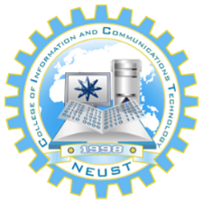

The Information Technology course in NEUST is a program that prepares students for a career in the fast-paced and ever-evolving world of technology.
The Information Technology course in NEUST is a four-year program that covers the fundamental principles and practices of computing and information technology. The course is designed to equip students with the necessary skills and knowledge to become competent and effective IT professionals.
The program starts with the basics of computing, including programming fundamentals, data structures and algorithms, and computer architecture. As the course progresses, students learn about more advanced topics such as software engineering, database management, networking, and cybersecurity.
One of the unique features of the Information Technology course in NEUST is the emphasis on hands-on learning. Students are provided with access to state-of-the-art computing facilities, which includes computer labs and specialized software. This allows students to apply the theoretical knowledge they have gained in class to real-world problems.
The program also includes a series of industry immersion activities that provide students with the opportunity to gain practical experience in the field. This includes internships with leading IT companies, participation in industry events and conferences, and exposure to cutting-edge technologies.
The faculty members of NEUSTs Information Technology department are highly qualified and experienced professionals who are experts in their respective fields. They bring a wealth of knowledge and practical experience to the classroom, ensuring that students receive the best possible education.
NEUSTs Information Technology course is designed to produce graduates who are ready to take on the challenges of the IT industry. The program’s comprehensive curriculum and hands-on approach ensure that students are well-prepared to tackle a wide range of IT-related jobs.
Graduates of NEUSTs Information Technology course have a wide range of career opportunities available to them. They can work as software engineers, web developers, database administrators, network administrators, cybersecurity specialists, and many other IT-related roles.
The demand for IT professionals continues to grow, both locally and globally. The Philippines is a major player in the IT industry, and there is a high demand for skilled IT professionals. NEUST’s Information Technology course provides students with the necessary skills and knowledge to meet this demand.
Apart from the excellent education and training provided, NEUST also offers a supportive and inclusive learning environment. The university’s culture of inclusivity and diversity ensures that every student feels welcomed and valued, regardless of their background or circumstances.
NEUST also offers various student support services, including academic advising, counseling services, and career services. These services ensure that students receive the support they need to succeed academically and professionally.
In addition to its academic programs, NEUST also offers a wide range of extracurricular activities and organizations that cater to the diverse interests of its students. These include sports teams, performing arts groups, and various student clubs and organizations.
Overall, NEUSTs Information Technology course is an excellent choice for students who are interested in pursuing a career in the IT industry. The program’s comprehensive curriculum, hands-on approach, and supportive learning environment provide students with the necessary skills and knowledge to succeed in this fast-paced and exciting field.
NEUSTs Information Technology course is recognized for producing competent and skilled IT professionals who are making a significant contribution to the industry. If you are interested in pursuing a career in IT, then NEUST’s Information Technology course is definitely worth considering.